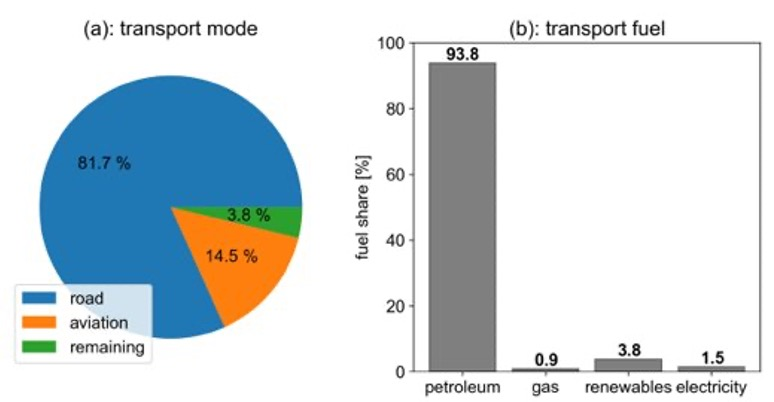

This mini-lecture introduces the transport sector. We will explore the different demands and technologies within the transport sector and how we can model them within MUSE.
The transport sector is vital in the modern age. In the last few decades, the use of transport has increased significantly. This is as more people gain access to vehicles and develop lifestyles which rely on transport.
Figure 6.2.1 shows different modes of transport. As can be seen, road transport is the most used transport mode. We can also see that over 90% of fuel used in the EU transport sector is petroleum based. This is similar across the world. However, this creates challenges due to the unsustainability of fossil fuels.

Figure 6.2.1: Transport modes and fuel share in the EU (Arens et al. 2020).
Due to the unsustainability of fossil fuels, other solutions have been taken up with support from governments around the world. For example, cars, motorbikes and buses can be fuelled by electricity. Electric vehicles have seen large reductions in cost and improvements in performance. Electric vehicles could play an important role in overcoming the sector’s challenges.
It is possible to model the different technologies in MUSE, and observe competition between technologies based upon their technoeconomic parameters.
The transport sector was estimated to be responsible for around 16% of global emissions in 2016 (Ritchie and Roser 2020). Thus, scenarios consistent with meeting global climate targets require transport sector emissions to decline rapidly. Therefore a rapid move towards sustainable technologies, such as electric vehicles is required. It is true, however, that some of the modes of transport are difficult to decarbonise. For example, it is difficult to decarbonise shipping and aviation technologies. This is because the energy density of lithium ion batteries and other technologies are lower than oil-based products. It is worth mentioning, however, that decarbonising transport is only useful if the energy sector increases its low-carbon electricity sources to supply the transport sector.
Similar to the residential sector, we can define different technologies for the transport sector using technoeconomic parameters. For example, we can split road transport into three categories:
We can then split these three categories into their propulsion system. For instance:
We can source road transport data from national energy balances such as from the IEA, and divide this between cars, motorcycles and buses based on the split of transport by mode in the country.
We can then run a MUSE model with the different parameters and see the effect of these different parameters on agent investment decisions. These parameters could be fuel prices, technology costs or performance parameters. We can also run the model with a carbon limit, which places a tax on carbon emissions, allowing us to work out how to pick a desirable policy depending on what we are trying to achieve.
In this mini-lecture we have considered the transport sector and how we can model this within MUSE. We discussed the emissions of the transport sector, and how different technologies can be used to reduce these emissions.